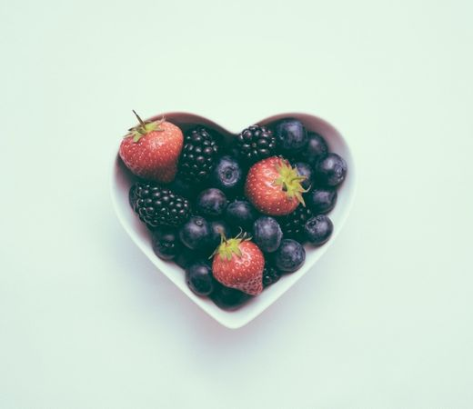
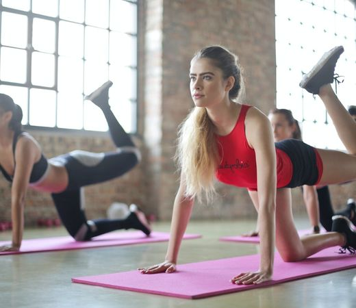
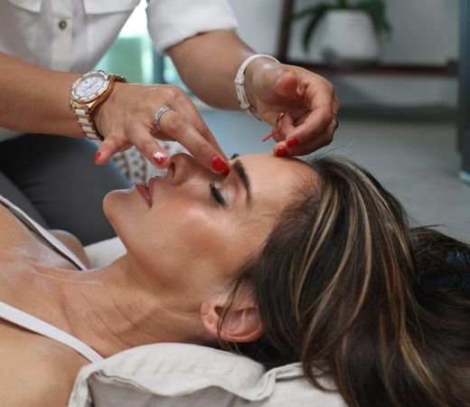

La nutrición es un factor clave para mantener una buena salud y un peso adecuado, especialmente para las mujeres. En muchas ocasiones, la falta de información y la rutina diaria pueden hacer que se tomen malas decisiones alimentarias, lo que puede llevar a un aumento de peso y a problemas de salud. Por ello, es importante conocer cuáles son los principales consejos de nutrición para evitar estos problemas. Ver más
A menudo se cree que el entrenamiento de fuerza es una actividad exclusivamente para hombres, lo que ha llevado a muchas mujeres a descartar esta forma de ejercicio como inapropiada o incluso peligrosa. Sin embargo, el entrenamiento de fuerza es un componente importante del ejercicio que puede ser beneficioso para hombres y mujeres por igual. Aquí exploraremos los mitos comunes sobre el levantamiento de pesas y por qué las mujeres deberían considerar agregarlo a su régimen de entrenamiento.Ver más
La piel es el órgano más grande del cuerpo y, por lo tanto, merece una atención especial en nuestra rutina diaria de cuidado personal. El cuidado adecuado de la piel puede prevenir el envejecimiento prematuro, las manchas y otras imperfecciones, así como protegerla de los rayos UV dañinos y otros factores ambientales. En este artículo, te proporcionaremos una guía completa sobre el cuidado de la piel para mujeres. Ver más
La salud sexual es un aspecto importante del bienestar general de las mujeres. Comprender y cuidar de la salud sexual es esencial para mantener una vida sexual saludable y satisfactoria. En este artículo, exploraremos diversos temas relacionados con la salud sexual de las mujeres, incluyendo consejos prácticos, explicaciones extensas y ejemplos de la vida cotidiana. ¡Sigue leyendo para obtener información valiosa sobre cómo cuidar de tu salud sexual! Ver más
La espiritualidad es una dimensión importante en la vida de muchas mujeres. Va más allá de las creencias religiosas y puede incluir una amplia gama de prácticas y creencias que se conectan con la búsqueda de significado, propósito y conexión interior. En este artículo, exploraremos la espiritualidad de las mujeres desde una perspectiva holística, abordando los signos zodiacales, creencias religiosas, la fe, la felicidad y el sentido de la vida. Ofreceremos consejos y tips para cultivar una espiritualidad saludable y significativa en la vida cotidiana. Ver más